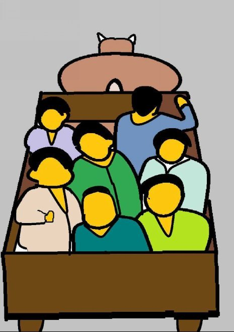
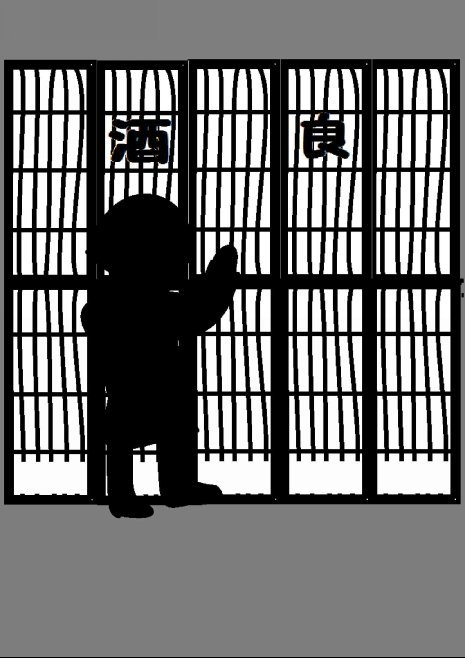
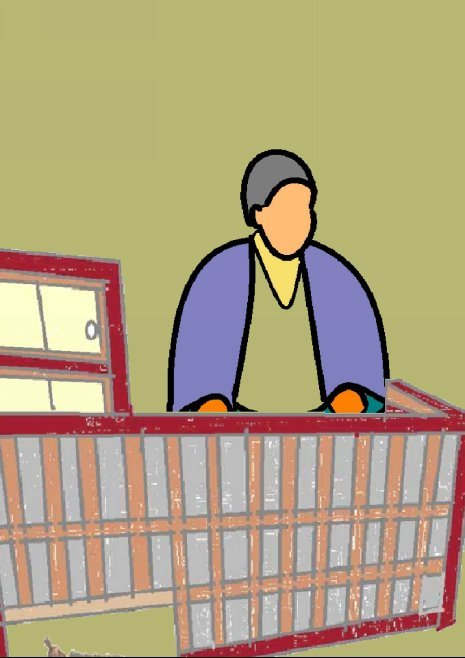
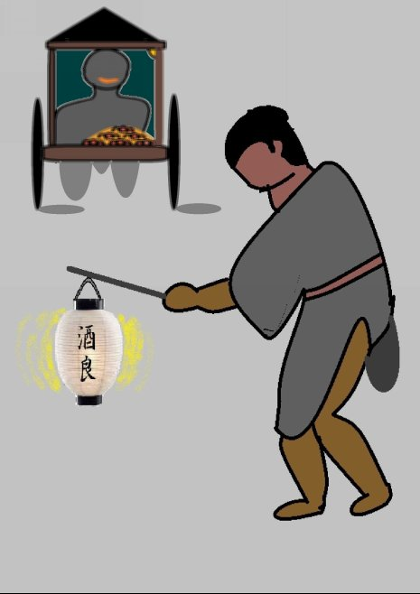
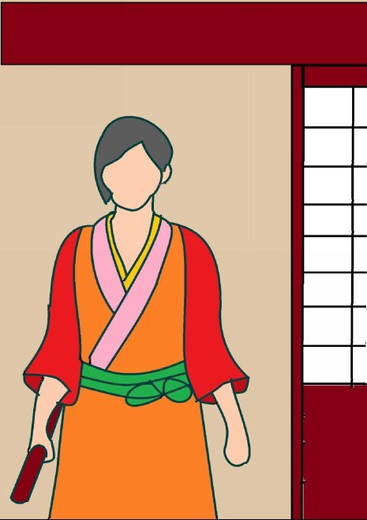
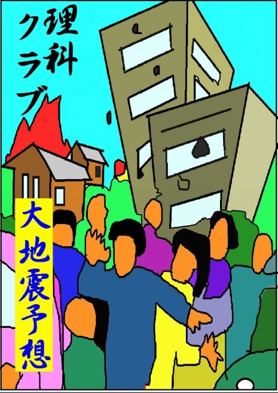
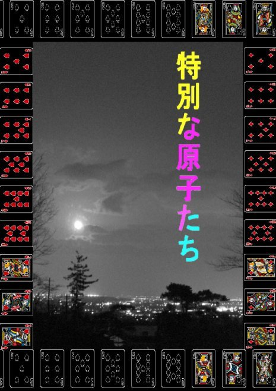

| ①たぬきのまんじゅうや 菰野物語 | |
| 深川龍 | |
| UNKNOWN (2016) | |
第一話 タヌキの饅頭屋
明治十年十二月初旬、三重縣三重郡千種村大字福松の巡検街道を二人の男と五人の女を乗せた牛車が北の方角に向かっておった。
当時はふつうの乗物といえば牛車か馬車かカゴじゃった。牛は荷台に七人も大人を乗せて引っ張っているので時々鼻を鳴らしたり大きな息をしたりして歩んだ。
七人の乗る牛車の車輪のタガは鉄の輪っぱで出来ていて巡検街道の路面の小砂をがりがりと鳴らし、時々、落ちておる小石をがたんがたんとはね飛ばしながら進んでおった。
この巡検街道は時々福松の村の衆が出て道普請をするのでいつもよく手入れされている方じゃった。道の広さはようやく馬車や牛車がすれ違える程の広さじゃった。
伊勢の亀山と美濃の関ヶ原をつなぐこの街道は鈴鹿山麓に点々とある村と村をつなぐ幹線道路で元々は幕府の役人が通るために造られた道じゃったそうな。牛車が千種村奥郷まで来ると、男の一人が遠慮がちに手綱を握るぎょ者の男に話しかけた。
「ちょっと、ここいらで降ろしてくださらんか。」
「ギンベェさん、降りてどうなさるね。」
「ぐいっとやって行くのも精進おとしと云うもんじゃ。」
巡検街道を横切って千種村から伊勢湾に面する漁師町の富田に続く道があった。八風街道というて近江と尾張を結ぶ道の一部分じゃった。近江は今の滋賀県、尾張は愛知県の西部じゃ。その交差点に古びた酒屋が一軒あった。
「なるほどそうか、わしもつき合おうかのう。」
馬車に乗っておった二人の男はギンベェさんとぎょ者をしている金治さんじゃった。
「そりゃ、困る。あんたらは底ぬけじゃ。わしらは帰れなくなる。」
女たちは急いでおった。それに女たちは手綱を握ったことがないので女たちだけでは牛車で帰られなかった。女たちは二人の男は飲み始

めると止まらないことを知っている。ギンベェさんが女たちを振り返った。
「いやいや、ちょっとだけじゃ。待っていてくれ。ほんの一杯引っかけて来るだけじゃ。」
女たちはギンベェさんに口々に言った。
「何がちょっとじゃ。」
おなご衆は家に帰ったら夕飯の支度やら何やかやあるでのう。ぎょ者をしている金治さんは女たちの非難の声に仕方なく断念したもんじゃ。
「そんじゃ、ギンベェさんだけ行きなさるがええ。」
牛車はギンベェさんを荷台から降ろすと、また、走りだした。女たちはギンベェさんに向かってはやし立てた。
「ギンベェさん、早く帰らんと、おタマさんにしかられるぞな。」
ギンベェさんは馬車を見送りながら、女たちにぶるんぶるんとにぎったこぶしを振って見せた。ギンベェさんの姿はちょうど今し方、夕日の山影になったばかりのところにあった。女たちにはギンベェさんの姿が正面から射すまばゆい夕日の中で暗いシルエットになっていつもより小さく見えたもんじゃった。
「何の、女ぼうがこわくて酒が飲めるかってもんだ。」
西の山の端に夕日がちょっこと残っていて、牛車に乗っている女たちの顔を赤黒くそめておった。
「あらあら、そんなこと言って良いの。おタマさんに言いつけてやろ。」
女たちのにぎやかな笑い声を乗せて牛車は山の延びてくる夕日の影に追われるようにとおざかっていった。ギンベェさんは馬車を見送ると、なわのれんを押し分けて、たて付けの悪い入口の障子をがたごとと開けて酒屋に入った。
「酒良さん、ごぶさたしとったのう。障子が閉まっとるんで、休みかと思たがな。」
客は誰も居らなんた。奥の居間から短いのれんを押し分けて白い足袋をはいた酒屋の主人は出て来た。

「ギンベェさん、久しぶりじゃ。なんの、開けておくとタヌキの奴が悪さをしに来るんでな。」
ギンベェさんは赤土で突き固めた土間の端の黒光りのする板の間に草鞋を履いたまま腰を下ろした。
「どんな悪さをしに来るんじゃ。」
頭がはげてギンベェさんより少し年上に見える酒屋の主人はいつものように一合マスを持って土間の奥の間に行った。そこには菰を被せた酒ダルが置いてあった。
「それがのう、最近は人に化けて酒を買いに来るんじゃ」
布ののれんの奧からとっくん、とっくんという酒ダルの呑口からに酒が注がれる音が聞こえた。ギンベェさんは唇をなめながら奥の方を見て相づちをうった。
「木の葉っぱで買いに来られちゃ、そりゃ困る。」
酒屋の主人は酒をなみなみと注いだ一合マスをお盆に載せてギンベェさんの前に持って行って置くと、すぐ座敷に上がって番台の後ろの小さなケヤキタンスの所へ行って引き出しから何やらぞろぞろと引き出した。
「ゼニは本物を置いて行くんじゃ。これがそうじゃが、本当のゼニじゃろう。」
ギンベェさんは先ず一合マスからマス酒を一口二口すすって舌打ちしておったもんじゃった。
「なるほど、これは古いゼニじゃのう。しかし、ゼニさえもらえばタヌキどんも大事なお客さんじゃないか。」
ギンベェさんはそう言いながら紐につづられた長い一文銭の束を手で繰りながら確かめ臭いを嗅いだ。
「どうじゃ。タヌキの臭いでもするかのう。」
ギンベェさんは銭の束を酒屋の主人に返してマス酒をまた一口二口すすった。それからゆっくりと首を振った。
「いやいや、特に何の臭いもせん一文銭の束じゃ。銭は銭じゃから大事にせねばのう。」
酒屋の主人はタヌキから貰った銭をギンベェさんから返してもらうとケヤキタンスの所へ行って引き出しを開けそれを再びそこにしまった。
「そりゃ、銭は銭じゃが、こちらが化かされはせんかと気色が悪うてのう。化かされてひどい目に遭うと嫌じゃ。」
それからギンベェさんは軽くあぶってもらったスルメをかじりなどしながら、小半時もいて一合マスの酒を三杯ほど飲んですっかり良い気分になった。
「外は暗くなってしもうた。細かいのが無いんで、これでおつりをもらえんかのう。」
ギンベェさんは酒屋の主人に一銭硬貨を二枚渡した。明治政府が発行した一銭硬貨は四十文であった。この時代にはまだ江戸時代の一文銭も通用していた。
「あいにくじゃ、タヌキが置いていったゼニで良ければおつりを出しますが。何の、つけでもええですぞ。」

酒代と肴代で七十二文だったから酒良の主人はギンベェさんから二銭貰ったので八文のおつりが必要だった。ギンベェさんは女房のおタマさんがつけを嫌うのでいつも酒代を小銭で払った。
「いや、タヌキのゼニも珍しい。そのゼニもらいましょう。」
酒屋の主人は再び座敷に上がってケヤキタンスの所へ行くと引き出しを開け八枚の一文銭を取り出した。
「そいじゃ、細かいんで、コヨリでむすんであげますわ。」
酒屋の主人はすぐに使い古しの帳面から外した和紙でコヨリをよると、タヌキが置いていったというゼニを円いゼニの中心にあいている四角い穴にコヨリを通してつづり合わせた。
「こりゃ、ごていねいに。」
ギンベェさんは酒屋の主人からコヨリで結んだ八文の銭を受け取ると着物の前をはだけて腹巻きの中に押しこんだ。
「チョウチンを持って行きなされ。新月で、その上くもり空じゃから、外は一寸先もやみじゃ。」
ギンベェさんは酒良とすみで太く書かれたチョウチンを下げて、なわのれんを押し分けながら外に出ると、歩きやすいように着物のすそをはしょって粋な格好になった。
「じゃあな。」
酒屋の主人はカチカチと火打ちを鳴らした。
「ほらよっ。」
酒良のある奥郷とギンベェさんが住む竹永村大字竹成の間には昼間も暗い森がある。その中を通る道をシシキ道と呼んでおって獅子鬼道とも猪来道とも書いた。
ギンベェさんは良い気分でチョウチンをさげてシシキ道を歩いた。
遠くに小さな明かりが見えた。真っ暗闇の中の小さな灯りにギンベェさんの視野が収斂していった。ギンベェさんは何だろうと思って引き寄せられるように近づいていった。それは小さな屋台の提灯じゃった。
「ギンベェどん。ふかしたてのマンジュウですぜ。一つ買っておくんなさい。」
暗い灯明に照らされて、屋台の中には蒸し立てのマンジュウがおいしそうに湯気を立てて並んでおった。
「さぁて、見たこともないマンジュウ屋じゃのう。」
マンジュウ屋はギンベェさんを見てにっと笑ろうた。腰を丸めた丸顔の人の良さそうな爺だったが髪の毛が黒々としていたのでギンベェさんはもっと若い男かと思った。
「みんな帰ったのに、ギンベェさんだけがどうして帰らないかって、おタマさんがかんかんに怒ってますぜ。みやげにマンジュウでも持って帰らないと、しめ殺されるかもしれませんぜ。」
ギンベェさんは遅くなったわけをおタマさんにどう言い訳しようかと考えていたところだったからマンジュウ屋が知らないはずの自分の女房のことをおタマさんと言っても何の不思議にも感じなかった。
「おいおい、こわいことを言うな。わかったよ。買うとも、買ってやるよ。」

ギンベェさんは他の者ならともかくあいてが知らないマンジュウ屋だったから女房のおタマさんのことをあからさまに恐がって見せることができた。
「へえ、おおきに。」
マンジュウ屋はそう言って竹皮にほっかほかの大きなマンジュウを十個ほど包んでギンベェさんに渡した。
「うまそうだな。オタマの奴、喜ぶだろうな。」
ギンベェさんはマンジュウの包みをもらうと、腹巻きからコヨリを通したゼニを取り出してマンジュウ屋に渡した。
「だんな、十文ですぜ。」
酒屋の主人が紙縒りに通して結んでくれた一文銭は八枚だった。
「負けといてくれよ。」
マンジュウ屋は小声でぶつぶつ言った。
「今夜はお客がからっきしなんで負けるわけにはいかんなあ。二文も負けたら儲けがありゃせん。」
ギンベェさんは酔っているので良くろれつがまわらない。
「こ、こらっ、マンジュウ屋。うんじゃあ、買うのやヽめじゃ。」
マンジュウ屋は慌てて下手に出た。
「ようがす。今夜は特別にお負けしときやしょう。」
ギンベェさんは左手に引き出物の風呂敷包みを持っていたので右手でマンジュウの包みを着物の懐に入れた。
「ぬくてえな。」
マンジュウ屋はまたにっと愛想笑いをした。
「気をつけて帰りなされ。最近、この辺りにゃ、悪いタヌキが出て、人をたぶらかすそうじゃ。」
マンジュウ屋はギンベェさんに、そう言うとシシキ道の縁にとめていた屋台をひいて暗闇の中を暗い灯りをつけて遠ざかっていった。
ギンベェさんが自分の家に着いたころにはぽつりぽつりと降り出し遠くでカミナリも鳴り始めていおった。
「借りたチョウチンがぬれてしまうところじゃった。」
ギンベェさんがそう言いながら半分上が障子になっている入り口の木戸を引き開け中に入った。案の定、入り口の土間にはおタマさんが仁王様のような顔で突立っておった。
「みんな帰ったのに、あんただけがどうして帰れなかったんだね。」
おタマさんの言葉はマンジュウ屋が言ったとおりじゃった。
「おタマ、悪かったな。ほれ、おみやげじゃ。」
ギンベェさんは左手に持っている風呂敷包みを上がりカマチに置くと懐から竹皮に包まれたマンジュウを出した。おタマさんは鼻をくんくんさせた。
「マンジュウって、匂いが変だよ。」
ギンベェさんは酔っているのでそんな臭いのことには無頓着だった。
「出来たてじゃ。温かい内に食え。」
ギンベェさんが座敷に上がるとおタマさんも上がった。ギンベェさんは丸いちゃぶ台の上で竹皮包みを置きワラひもをほどいた。

竹皮の中にはマンジュウがきちんと五個ずつ二列に並べられていたがギンベェさんの手がふるえて一個座敷に転げ落ちた。おタマさんの金切り声がした。
「何だね、あんた。こんなものを私に食わせようって言うのかね。」
ほんに馬フンは色も形も大きさもマンジュウによう似とる。転げ落ちたのはマンジュウでは無く馬糞じゃった。ギンベェさんはわれに返った。
「そうか、おかしいと思うた。あ奴はタヌキじゃたか。」
それからギンベェさんの顔にぬれたぞうきんが飛んできて頭に激しくほうきがぶつかってきた。
翌日、ギンベェさんはチョウチンを返しに酒良に出かけた。酒良の主人は笑いながらギンベェさんを迎えた。
「タヌキの奴にやられなすったね。ほら、これは昨夜ギンベェさんに渡したゼニじゃ。奴がこれを持って酒を買いに来ましたのじゃ。」
酒屋の主人は番台の後ろの小さなケヤキのタンスからコヨリを通した八枚の一文銭を取り出して見せた。
「おタマにはしかられるし、えらい目にあった。」
ギンベェさんはタヌキに欺された自分が悔しかった。タヌキに仕返しをしてやりたかった。そうでもしないとおタマさんに顔が立たないと思った。酒屋の主人が笑いながら言った。
「奴は捕まえて、裏の小屋に置いてありますぞな。」
ギンベェさんはタヌキに仕返しをするにはちょうど良いと思った。二人は裏の小屋にタヌキを見に行った。四足をしばられたタヌキが小屋の軒につり下げられておった。
「ギンベェさん、良かったらあんたにあげますぞ。タヌキ汁にでもしてかたきをうってやりなされ。」
ギンベェさんは酒屋の主人の言葉をこれ幸いと思った。
「そうですかい。ほんじゃあ、譲り受けやしょう。」
ギンベェさんはそのタヌキをもらって棒にしばり、肩にかついで家に帰った。家に着くとタヌキをよいしょと庭に降ろして、家の中に声をかけた。
「おタマ、包丁を持って来い。タヌキ汁をつくってやる。昨夜、俺たちをだました奴だ。」
おタマさんは包丁を持って出て来た。地面に置かれたタヌキはかん念したのか目を閉じたままじゃった。
「おや、大きなタヌキじゃないか。あんた、重かったやろ。」
おタマさんはそう言うと包丁を持ってタヌキに近づいた。ギンベェさんはおタマさんが自分に包丁を渡すのかと思っていたので驚いて言った。
「えっ、おまえが殺るのか。」
おタマさんは首を振りながらタヌキの前にしゃがんだ。
「痛かったでしょう。かわいそうに。」
おタマさんは突然、タヌキをきつくいましめているナワをぷっつり、ぷっりと切ったのじゃった。もうすっかりかん念しておったタヌキじゃったから倒れたままぽかんとしておった。
「おい、せっかく酒屋が捕まえてくれたタヌキを逃がすのか。」
おタマさんはタヌキを起こしてやった。
「もういたずらはするんじゃないよ。さっさとお行き。」
タヌキは丸い大きな目から粒のような涙をこぼしながら、何度も何度もおタマさんの方を振り返り振り返りしながら獅子鬼道の森にもどっていったそうじゃ。（完）
深川龍の不思議シリーズ「①理科クラブ、②特別な原子たち」は来る六月三十日より、各三百円に値上げします。お早くお求めください。


- 1 -